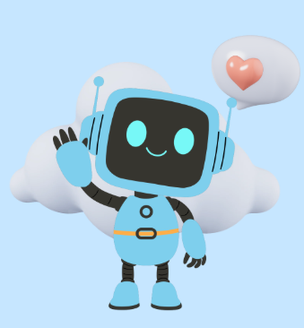
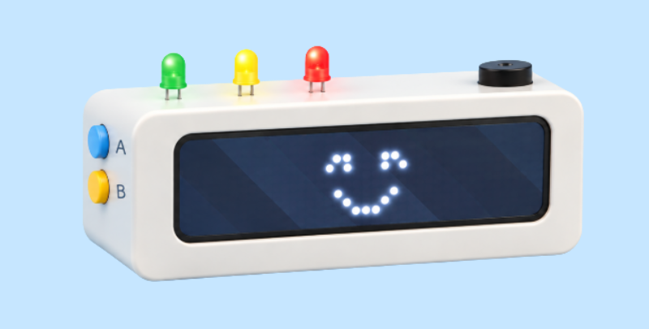

Recordatorio de tiempo
Se prende una luz LED y el buzzer cada 30 minutos, para que la persona sepa cuánto tiempo pasó desde que empezó una actividad.
Mi Amigo Tecnológico
Un pequeño gran aliado para
organizar tu tiempo y tus tareas.

La problemática
Nuestro robot responde a la necesidad de que cada vez hay más chicos/jóvenes con TDAH que pueden tener dificultades para organizarse y, por consecuencia, tienen malas calificaciones. Esto podría dificultar la educación inclusiva.
Este robot los ayuda a resolver uno de los problemas centrales del TDAH: la gestión del tiempo. Por eso, se enfoca en notificar la cantidad de tiempo que pasa en una tarea, ayudar con recordatorios y, si no se nota progreso en alguna tarea, llamar su atención para que vuelva a concentrarse.

Nuestra solución
Se prende una luz LED y el buzzer cada 30 minutos, para que la persona sepa cuánto tiempo pasó desde que empezó una actividad.
El usuario selecciona una tarea previamente configurada con los botones A, B o A y B juntos. Después de una hora, el robot muestra su nombre en la pantalla y activa otra luz LED y el buzzer.
Al presionar el logotipo de la micro:bit, el robot registra el progreso. Si pasan más de 30 minutos sin un nuevo registro, activa la tercera luz LED y el buzzer para recordar que retome la actividad.
Es normal en las personas con TDAH no tener percepción del tiempo que transcurre, provocando que pasen que lleven cierto tiempo realizando una actividad cuando, a veces, es mucho más o mucho menos.
No es que no presten atención, a veces simplemente no pueden concentrarse para mucho tiempo y, después de unos minutos, su cabeza se va a otra cosa; por eso pueden olvidar las tareas asignadas en clase con mucha facilidad.
Muchas veces sucede que, a pesar de realizar tareas, la persona siente que no ha avanzado nada. Es importante la organización para poder notar cuánto se ha realizado.
